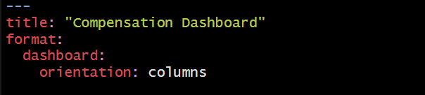

library(skimr)
library(tidyverse)
library(peopleanalytics)
library(DT)
library(ggtext)
library(scales)
Over the last few weeks, I have spent some time doing data analysis and visualization. The chosen tools for analysis, documenting, presenting, and sharing my work are R and Quarto. To acquire specific skills and knowledge, I adopted a project-based approach and designed small projects around my learning objectives. However, I encountered a challenge: how can I effectively display different visual data in one place, such as a dashboard? I needed a tool to simplify data presentation while allowing for tailored content. That’s when I discovered Quarto Dashboards, a recent addition to Quarto. This feature allowed me to create a custom dashboard using R, complete with personalized colors and styles. In the following sections, I will share how I created the dashboard.
You can find the finished dashboard here:
The code for the dashboard can be accessed on GitHub.
Goals and Data Set
The project had two goals. Firstly, I aimed to segment a data set into various categories to investigate how compensation differs based on factors like an employee’s role, department, experience level, and demographics. Secondly, I wanted to craft a customized dashboard using R and its packages, enabling personalized visualizations tailored to specific needs.
The data set is reported in the book The Fundamentals of People Analytics With Applications in R. It’s named employee and is available in the peopleanalytics package including information about both current and former employees, with field definitions provided in the book’s data dictionary.
Setting Up the Project
To initiate the project, I created a new Quarto document in R Studio. It’s important to note that dashboards are new in the upcoming 1.4 release of Quarto and are still under active development. Before beginning, I ensured I had the latest pre-release version of Quarto installed, following the recommendations from the Quarto website. Within the Quarto document, I selected the dashboard format and specified layout components.
Reading and Preparing the Data
I used several packages to aid me in the data preparation process.
The primary questions guiding this analysis were:
How does the last salary increase vary across departments, roles, experience levels, generations, and genders?
How is compensation distributed across different departments, roles, experience levels, generations, and genders?
How does compensation compare across different departments, roles, experience levels, generations, and genders?
Initially, I explored the data set to select variables essential for the analysis. The data set contains information about 1470 employees and 36 variables. To learn more about the data see here. For this project, focusing on compensation differences based on roles, departments, experience levels, and demographics, I selected 7 specific variables see here.
Data Exploration
Employing base R and the tidyverse package, I addressed initial questions related to the data set. I created new columns and variables to explore the data and then graphics to visualize it. As this part is not central to this post, I will not delve into details. If you are interested in more details, you can find the code in this file on GitHub.
Creating a Dashboard
With the data and visualizations ready, the dashboard creation began in a Quarto document specifying the format (dashboard) and layout (columns).

Customization
The dashboard allows selecting from 25 themes or creating personalized themes using Sass. For this dashboard I opted for the litera theme and customized the background color of the navbar, text, and navigation.
Designing the Dashboard Layout
You can arrange dashboard components using rows and columns and use tabsets to include multiple views of data. Here are more details and layout options. I organized the dashboard with columns and tabsets for clear visualizations. Each column had tabs displaying different visualizations. Below is an example: on the left, the average compensation by department and experience level is displayed, while on the right, a visualization summarizes the spread of data within each category.
Finalizing and Sharing the Dashboard
Once your dashboard is done, you may want to share it with others. I hosted the dashboard using GitHub Pages. In the GitHub repository for your dashboard, go to ‘Settings’ and then ‘Pages.’ Select the branch and folder of your dashboard’s index.html file, click ‘Save,’ and you’ll get a URL to display your work. Here’s the final link for this dashboard: https://cozminasecula.github.io/dashboard/.
Summary
In summary, to create a dashboard:
I started outlining my goals with two key questions in mind:
- Why do I need to build this dashboard?
- What do I need to learn?
Then, I selected the data.
Next, I prepared the data.
I chose visualizations to represent the data.
Finally, I used a template that allowed me to create a custom dashboard using R, complete with personalized colors and styles.
And that’s all! I hope this post will inspire you to create and use dashboards effectively to answer your inquiries with valuable insights derived from data.